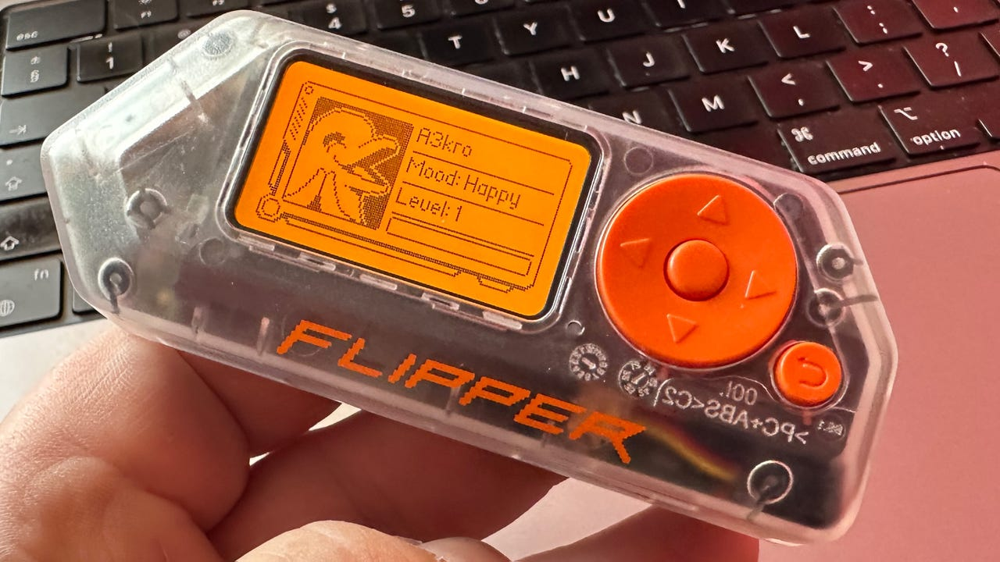

Cuidado si viajas con un Flipper Zero, ya que es ilegal en este país
Flipper Zero está de moda. Un popular gadget que se ha convertido en una “navaja suiza del hacking” gracias a su gran versatilidad. Y las opciones que ofrece han hecho que sea un éxito en ventas. Aunque cuidado si viajas con esta herramienta, ya que puedes tener problemas.
El Flipper Zero es un dispositivo multifuncional que ha ganado popularidad como herramienta de hacking de hardware portátil. Diseñado inicialmente para facilitar el aprendizaje sobre seguridad cibernética y hacking ético, su versatilidad también lo convierte en una herramienta peligrosa.
Puede ser utilizado para probar sistemas de seguridad o incluso clonar mandos a distancia, lo que plantea preocupaciones sobre su uso indebido. Aunque se promociona como una herramienta educativa, Flipper Zero permite realizar acciones que pueden ser consideradas ilegales, como el acceso no autorizado a sistemas electrónicos.
Debido a su potencial para ser mal utilizado, varios países han comenzado a regular su venta y uso. Brasil fue el primero en prohibir la venta y el uso de Flipper Zero, clasificando el dispositivo como un objeto de carácter criminal.
En Canadá y Estados Unidos, aunque no hay prohibiciones formales, hay discusiones sobre su regulación debido a su uso por extremistas. Si estás pensando en viajar a alguno de estos países, es mejor dejar el Flipper Zero en casa, ya que podrías enfrentar problemas legales.